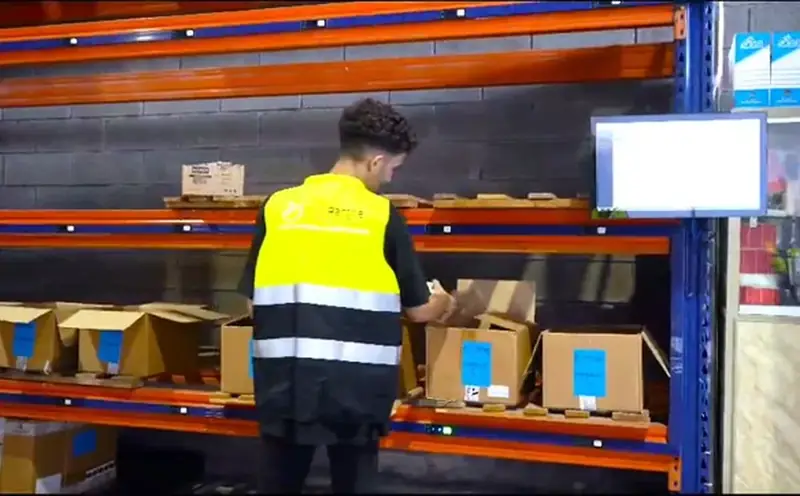
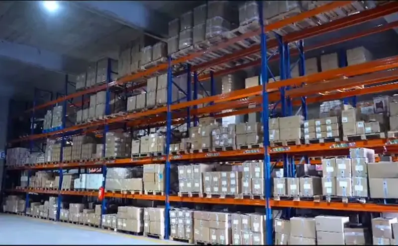
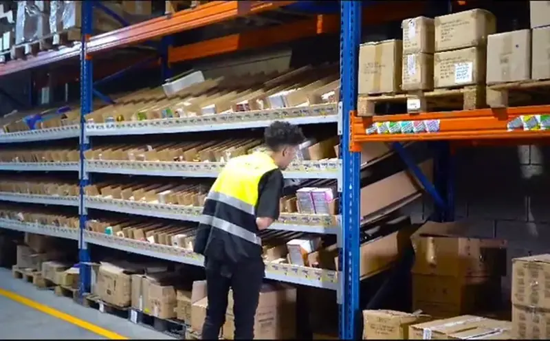
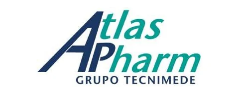
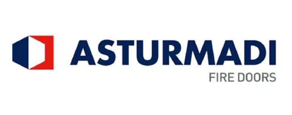
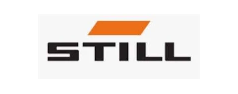
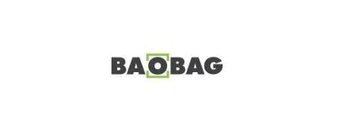
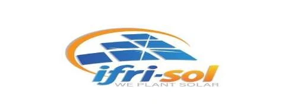
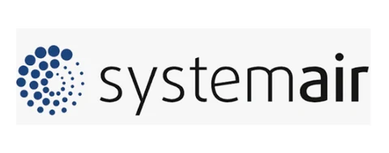

En bref : la logistique PLV consiste à recevoir le matériel promotionnel d’une campagne, à le transformer en kits prêts à poser et à le livrer à chaque point de vente à la bonne date. À Casablanca, Tecxodus tient des cadences de 180 à 224 pièces à l’heure par personne et a déjà monté une campagne jusqu’à 100 000 pièces par jour.
Les opérations PLV prises en charge
- Réception et contrôle : déchargement, comptage par référence et par version, signalement des écarts avant le lancement.
- Stockage de campagne : surface ajustée au volume, de 100 à 20 000 m², avec suivi du stock dans le WMS client.
- Mise en kit et assemblage : kits par magasin, coffrets promotionnels, montage de présentoirs.
- Fardelage et mise en lot : regroupement des produits et du matériel selon la nomenclature de la campagne.
- Étiquetage et ré-étiquetage : étiquettes par magasin, par version ou par langue, reprise d’un étiquetage non conforme.
- Envoi par magasin : préparation des colis par point de vente, listes de colisage, suivi des expéditions.
- Reliquats : comptage du matériel restant, stockage pour la prochaine opération, retour ou destruction sur décision du client.
- Opérations à la carte : le périmètre suit l’évolution de la campagne. Nous appliquons aussi des méthodes de préparation et d’étiquetage issues des standards Amazon, courantes en Europe et au Royaume-Uni, encore rares au Maroc.




Campagnes PLV pour Marjane, Carrefour, BIM et Kazyon
Tecxodus prépare des campagnes PLV destinées aux magasins Marjane, Carrefour, BIM et Kazyon : kits par magasin, présentoirs, étiquetage et envois par point de vente.
Exemple : pour une campagne destinée au réseau Marjane, le client devait livrer ses magasins dans une fenêtre courte. À sa demande, Tecxodus a porté la production à 100 000 pièces par jour : réception du matériel, mise en kit par magasin, étiquetage et préparation des envois.
Pour estimer votre propre campagne, partez de la cadence. À 180 pièces à l’heure par personne, 10 000 pièces représentent environ 56 heures de travail ; à 224 pièces à l’heure, environ 45 heures. 100 000 pièces en une journée demandent donc 450 à 560 heures de travail, soit 56 à 70 personnes sur une journée de 8 heures. Ce calcul fixe le délai et le budget, plutôt qu’une grille forfaitaire.
Dans nos entrepôts ou sur votre site
Les opérations se font dans nos entrepôts d’Aïn Sebaâ (Softpark / Soft Logistic, Casablanca) ou directement chez vous, quand le matériel est déjà sur place ou que la campagne l’exige. Le délai entre la réception et la mise en magasin est fixé avec vous selon le nombre de pièces, de versions et de magasins. La cadence est ensuite dimensionnée pour tenir la date de lancement.
Ils nous confient leurs opérations PLV
Ces clients ont réalisé des opérations PLV avec Tecxodus. Leurs logos sont publiés avec leur autorisation.








Standards et exigences des groupes internationaux
Les multinationales travaillent avec des cahiers des charges précis. Tecxodus applique vos procédures et les standards attendus par vos équipes supply chain, qualité et trade marketing :
| Standard | Application chez Tecxodus |
|---|---|
| GS1 (EAN-13, GS1-128, SSCC) | Codes-barres produit, étiquettes logistiques et étiquettes palette SSCC conformes aux exigences des enseignes |
| Standards de préparation Amazon | Méthodes de préparation, d’emballage et d’étiquetage courantes en Europe et au Royaume-Uni |
| Cahiers des charges enseignes | Colisage, étiquetage et préparation par magasin selon les règles de Marjane, Carrefour, BIM et Kazyon |
| Palettes EUR/EPAL et UK | Réception et expédition sur palettes 1200 × 800 mm et 1200 × 1000 mm, et hors gabarit |
| Incoterms® 2020 | Réception des imports coordonnée avec votre transitaire selon l’Incoterm du contrat |
| Contrôle qualité AQL (ISO 2859-1) | Contrôle par échantillonnage au niveau défini par votre service qualité |
| SOP client et audits | Vos modes opératoires appliqués sur chaque poste ; visite et audit de site sur demande |
| Traçabilité WMS | Stock suivi par référence, version et lot ; accès WMS client et accès caméra selon le compte |
| Confidentialité | Accord de confidentialité (NDA) signé sur demande pour le matériel avant lancement |
Votre groupe exige une certification ou un référentiel particulier ? Indiquez-le dès le brief : nous vérifions la conformité avant le chiffrage.
Prix de la logistique PLV : repères de marché
Tecxodus chiffre chaque campagne selon l’opération, à partir d’un échantillon ou d’un pilote. Pour situer un budget, voici des repères publiés pour le marché marocain :
| Poste | Repère de marché | Unité |
|---|---|---|
| Location d’entrepôt classe A, Casablanca | 55 à 80 DH | par m² et par mois |
| Stockage logistique e-commerce, Maroc | 40 à 80 MAD | par m² et par mois |
| Préparation de commande | 5 à 15 MAD | par colis |
| Mise en kit, assemblage, étiquetage | selon le temps par pièce | coût horaire ÷ cadence (180 à 224 pièces/h) |
Sources : maroctl.com, clarodigi.com, consultées le 18/11/2026. Repères indicatifs du marché, distincts des tarifs Tecxodus.
Ce qu’il faut nous envoyer pour un chiffrage
- un échantillon ou la nomenclature du kit (composants, quantités, versions) ;
- le nombre de pièces et de magasins, avec la liste des destinations ;
- la date d’arrivée du matériel et la date de mise en magasin ;
- les opérations voulues : kit, assemblage, fardelage, étiquetage, envoi ;
- le traitement prévu des reliquats.
Questions fréquentes
Combien coûte la logistique PLV à Casablanca ?
Le prix dépend de l’opération : stockage, mise en kit, assemblage, étiquetage ou envoi par magasin. Tecxodus chiffre chaque campagne à partir d’un échantillon ou d’un pilote. Repères de marché publiés : 55 à 80 DH/m²/mois pour un entrepôt classe A à Casablanca, 5 à 15 MAD par colis préparé.
Quelle cadence Tecxodus peut-il tenir sur une campagne PLV ?
Les cadences mesurées sur des opérations réelles sont de 20 palettes à l’heure par personne en manutention, et de 180 à 224 pièces à l’heure par personne selon l’opération. Sur une campagne PLV destinée aux magasins Marjane, l’équipe a atteint 100 000 pièces par jour à la demande du client.
Quelle surface pouvez-vous réserver pour une campagne ?
La surface s’adapte à la campagne, de 100 m² à 20 000 m², à Aïn Sebaâ (Softpark / Soft Logistic, Casablanca).
Pour quelles enseignes préparez-vous des campagnes PLV ?
Tecxodus prépare des campagnes PLV destinées aux magasins Marjane, Carrefour, BIM et Kazyon, avec des kits et des envois préparés par point de vente.
Les opérations peuvent-elles être faites chez nous ?
Oui. Les opérations PLV se font dans les entrepôts Tecxodus à Aïn Sebaâ ou directement sur le site du client, selon le volume, les délais et le matériel.
Quel délai entre la réception du matériel et l’envoi en magasin ?
Le délai est fixé selon le besoin : nombre de pièces, de versions, de magasins et date de lancement. La cadence est dimensionnée pour tenir la date de mise en magasin.
Travaillez-vous avec des multinationales ?
Oui. Des groupes internationaux comme Eaton, STILL, Systemair, Ziegler et Miroglio Group confient des opérations à Tecxodus. Nous appliquons leurs procédures, leurs standards d’étiquetage et leurs exigences de reporting.
Quels standards d’étiquetage appliquez-vous ?
Nous étiquetons selon les standards GS1 (EAN-13, GS1-128, étiquettes palette SSCC), les standards de préparation Amazon et les cahiers des charges des enseignes : Marjane, Carrefour, BIM, Kazyon.
Pouvez-vous suivre nos procédures qualité et accepter un audit ?
Oui. Vos SOP sont appliquées sur chaque poste, le contrôle qualité peut suivre un plan d’échantillonnage AQL (ISO 2859-1), et votre équipe peut visiter ou auditer le site.
Comment suivre l’avancement d’une campagne à distance ?
Chaque client dispose d’un accès au WMS pour suivre le stock et les préparations, et d’un accès caméra selon les modalités de son compte. Utile pour les sièges régionaux ou européens qui pilotent la campagne à distance.
Pouvez-vous gérer un lancement national en quelques jours ?
Oui. Avec 180 à 224 pièces à l’heure par personne, la cadence se dimensionne selon les effectifs : une campagne a atteint 100 000 pièces par jour.
Que devient le matériel restant après la campagne ?
Les reliquats sont comptés, rangés par référence et suivis dans le WMS. Le client décide ensuite : stockage pour une prochaine opération, retour ou destruction.